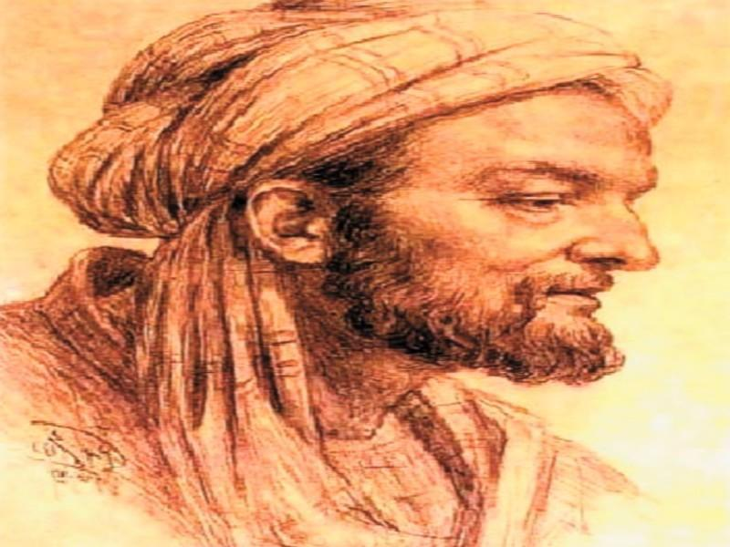

Who Was Ibn Tufayl?
Ibn Tufayl (Abū Bakr Muḥammad ibn Ṭufayl, c. 1105–1185) was an Andalusian philosopher, physician, and intellectual of the twelfth-century Islamic world. He is one of the most important representatives of Andalusian philosophy and medieval Islamic philosophy.
Ibn Tufayl is best known for his philosophical narrative Hayy ibn Yaqzan, a remarkable work that explores how a human being might develop knowledge of nature, the self, and God through observation, reason, and intellectual reflection. The work is also known in Latin as Philosophus Autodidactus, or The Self-Taught Philosopher.
Through the story of Hayy, Ibn Tufayl examines some of the central questions of philosophy: How does human knowledge begin? Can reason discover truth without formal education? Can a person reach knowledge of God through nature and rational investigation? And how should philosophical truth relate to religious revelation and society?
Ibn Tufayl: Quick Facts
- Full name — Abū Bakr Muḥammad ibn Ṭufayl
- Also known as — Ibn Tufayl, Ibn Tufail, Abubacer, and Abentofail
- Born — c. 1105
- Died — 1185 CE
- Region — al-Andalus and the western Islamic world
- Philosophical tradition — Andalusian philosophy and Islamic philosophy
- Major work — Hayy ibn Yaqzan
- Latin title — Philosophus Autodidactus
- Major philosophical subjects — Epistemology, metaphysics, philosophy of nature, psychology, ethics, religion, and human knowledge
- Associated thinkers — Avicenna, Ibn Bajja, and Averroes
Ibn Tufayl's Early Life and Historical Background

Relatively little is known with certainty about the early life and education of Ibn Tufayl. He was associated with the region around Granada in al-Andalus and became active as a physician, administrator, and intellectual within the Almohad world.
Ibn Tufayl lived during a particularly important period in the history of Islamic philosophy. Philosophical traditions inherited from Aristotle, Plato, Neoplatonism, and earlier Islamic philosophers were being developed in new ways in al-Andalus.
His intellectual environment included the legacy of Ibn Bajja (Avempace) and the work of his younger contemporary Ibn Rushd (Averroes). Ibn Tufayl is also traditionally associated with introducing Ibn Rushd to the Almohad ruler Abu Ya'qub Yusuf.
Ibn Tufayl and Andalusian Philosophy
Andalusian philosophy developed within the intellectually rich civilization of al-Andalus, where philosophy, medicine, science, theology, literature, and religious scholarship interacted with one another.
Ibn Tufayl belongs to the philosophical tradition that sought to understand the relationship between human reason, nature, metaphysics, and religious truth. His philosophy reflects the Aristotelian and Platonic inheritance of Islamic falsafa while also presenting an original philosophical narrative.
Rather than presenting his philosophy as a conventional systematic treatise, Ibn Tufayl develops his ideas through the story of Hayy. This literary method allows him to investigate philosophical questions through the gradual intellectual development of a human being.
What Is Hayy ibn Yaqzan?
Hayy ibn Yaqzan is Ibn Tufayl's most important surviving philosophical work and the principal source for understanding his philosophy. It is presented as a philosophical narrative about a human being who grows up on an isolated island and gradually discovers the nature of the world through observation and reason.
The story follows Hayy from infancy through adulthood. Without conventional schooling or established philosophical instruction, Hayy observes animals, plants, his own body, and the surrounding natural world. Through these experiences he gradually develops increasingly sophisticated forms of knowledge.
The philosophical importance of Hayy ibn Yaqzan lies in this intellectual development. Ibn Tufayl uses Hayy's life to explore epistemology, metaphysics, philosophy of nature, psychology, ethics, and religious philosophy.
Why Is Ibn Tufayl Called the Self-Taught Philosopher?
Ibn Tufayl's Hayy is often described as the self-taught philosopher because he develops knowledge without the normal institutions of education, social traditions, or philosophical teachers.
Hayy's education comes primarily from direct experience. He observes nature, investigates physical processes, studies living organisms, reflects upon his own existence, and uses reason to move from particular observations toward broader explanations.
The Latin translation of Ibn Tufayl's work became known as Philosophus Autodidactus, meaning "The Self-Taught Philosopher." This title captures one of the central philosophical questions of the work: how far can human reason develop when it begins from experience rather than formal instruction?
Ibn Tufayl's Philosophy of Knowledge
Knowledge is one of the central themes of Ibn Tufayl's philosophy. Through Hayy's intellectual development, Ibn Tufayl explores how human beings move from sensory experience to rational understanding and eventually toward metaphysical knowledge.
Hayy begins by encountering the physical world through perception. He observes differences between living and non-living things, investigates biological processes, and attempts to understand the causes underlying what he sees.
His investigation gradually becomes more theoretical. Instead of merely observing individual objects, Hayy begins asking questions about the principles that explain nature as a whole. Ibn Tufayl therefore presents human knowledge as a progressive movement from sensation and observation toward reason and metaphysical reflection.
Ibn Tufayl's Epistemology and the Development of Reason
Epistemology in Ibn Tufayl's philosophy concerns the possibility, development, and limits of human knowledge. Hayy ibn Yaqzan presents an extended philosophical experiment in which a human being develops knowledge independently of society.
Hayy's intellectual development begins with observation and sense perception. He investigates his environment and learns through repeated encounters with nature. Experience provides the material from which rational investigation develops.
Ibn Tufayl ultimately presents human reason as capable of moving beyond immediate sensory information. Through intellectual reflection, Hayy discovers increasingly general truths about nature, causation, existence, and the order of the cosmos.
Ibn Tufayl's Philosophy of Nature
Nature plays a fundamental role in Ibn Tufayl's philosophy. Hayy's philosophical education begins not with books or teachers but with direct examination of the natural world.
Hayy studies animals, plants, bodily processes, growth, decay, movement, and the relationships between different forms of life. His investigations lead him to recognize order and regularity within nature.
Nature therefore becomes more than a collection of physical objects. It becomes a source of philosophical knowledge. By studying the natural world carefully, Hayy gradually begins to ask questions about its causes, organization, and ultimate explanation.
How Does Ibn Tufayl's Philosophy Explain God?
One of the most important questions in Hayy ibn Yaqzan is how human reason can arrive at knowledge of God. Ibn Tufayl presents Hayy's investigation of nature as a path toward metaphysical understanding.
As Hayy studies the world, he becomes increasingly aware that physical objects are dependent, changing, and subject to processes of generation and destruction. He begins searching for explanations that go beyond individual physical objects.
Hayy's reasoning eventually leads him toward the idea of a higher and necessary source of the order found in the cosmos. Ibn Tufayl therefore connects knowledge of nature with metaphysical knowledge of God.
What Was Ibn Tufayl's Philosophy of Metaphysics?
Metaphysics becomes the highest stage of Hayy's intellectual development. After investigating the physical world, Hayy begins asking questions about existence, causation, the structure of the cosmos, and the ultimate source of reality.
Ibn Tufayl's metaphysical thought reflects the broader Aristotelian and Platonic traditions of Islamic philosophy. The cosmos is understood as an ordered reality whose structure can lead rational inquiry beyond physical appearances.
The movement from physics to metaphysics is essential to Ibn Tufayl's philosophy. The study of nature does not end philosophical inquiry; instead, it prepares the intellect for questions about realities that cannot be understood through ordinary sensory experience alone.
How Does Hayy Develop His Intellect?
Hayy's intellectual development is the central narrative device of Ibn Tufayl's philosophy. He begins as a human infant and gradually develops the abilities required to understand himself and the world.
At first, Hayy responds to immediate physical needs. Later he becomes an observer of nature. His curiosity develops into systematic investigation, and his observations become the foundation for rational reflection.
Eventually, Hayy's intellect moves from physical investigation toward abstract philosophical questions. He begins considering the nature of life, causation, the cosmos, the self, and the ultimate reality beyond the changing world.
Ibn Tufayl's Philosophy of the Soul
The human soul is another important subject in Ibn Tufayl's philosophy. Hayy's investigation of living beings eventually leads him to distinguish physical bodies from the principles of life and consciousness associated with them.
Hayy also reflects upon his own identity and discovers that understanding the human being requires more than understanding the physical body. Questions about perception, consciousness, intellect, and spiritual development become increasingly important.
Ibn Tufayl's treatment of the soul therefore connects philosophy of mind, psychology, epistemology, and metaphysics. Human beings are capable of intellectual development that can ultimately transcend ordinary sensory experience.
Ibn Tufayl on Reason and Human Understanding
Reason is one of the most powerful instruments in Ibn Tufayl's philosophy. Hayy's story demonstrates how rational inquiry can develop from ordinary experience into philosophical understanding.
Ibn Tufayl does not portray reason as a merely practical tool. Reason allows Hayy to investigate causes, recognize patterns, form general concepts, and ask questions about realities beyond immediate perception.
This emphasis on reason is particularly important in the history of Islamic philosophy. Ibn Tufayl explores how far human intellectual ability can progress independently and how rational knowledge relates to religious truth.
Ibn Tufayl's Philosophy of Religion
Ibn Tufayl's philosophy is deeply concerned with the relationship between philosophy and religion. The story of Hayy raises the question of whether human reason can discover truths that religious revelation also communicates.
When Hayy eventually encounters a human religious community, he discovers that its teachings concern many of the same fundamental realities that he had approached through philosophical investigation.
Ibn Tufayl therefore presents an important distinction between the methods by which truth may be understood and communicated. Philosophical reasoning can investigate truth through intellectual reflection, while religious teaching communicates truth through forms that can be understood by a wider community.
How Does Ibn Tufayl Reconcile Philosophy and Religion?
One of the central questions in Ibn Tufayl's philosophy is whether philosophical truth and religious truth are fundamentally opposed. His treatment in Hayy ibn Yaqzan suggests that they can point toward the same ultimate reality while reaching different audiences through different methods.
Hayy reaches important conclusions through observation, rational investigation, and philosophical contemplation. When he encounters revealed religion, he recognizes similarities between its teachings and the truths he discovered through reason.
Ibn Tufayl's discussion is therefore not simply a debate between belief and reason. It is an investigation into different forms of access to truth and the different intellectual capacities of human beings.
Hayy ibn Yaqzan and Absal
A major turning point in Ibn Tufayl's story occurs when Hayy encounters Absal, a religious man who has withdrawn from society in search of a more contemplative life.
Their meeting allows Ibn Tufayl to compare philosophical understanding with religious belief. Although Hayy has developed his understanding independently, Absal recognizes that many of Hayy's conclusions correspond to truths contained within his religious tradition.
Their relationship allows the philosophical narrative to move from the isolated development of an individual thinker toward the larger question of how philosophical insight functions within a religious society.
Ibn Tufayl's Philosophy of Society
Ibn Tufayl also uses Hayy ibn Yaqzan to examine the relationship between the individual philosopher and society. Hayy's isolated intellectual development is very different from the way ordinary human beings acquire beliefs through language, education, customs, and religious institutions.
When Hayy enters society, he discovers that people have different intellectual capacities and different ways of understanding religious teachings. The encounter raises difficult questions about whether philosophical truths can be communicated directly to everyone.
Ibn Tufayl's treatment of society therefore connects political philosophy, religious philosophy, education, and epistemology. The philosopher's relationship with society becomes a central problem in the final part of the narrative.
What Was Ibn Tufayl's Philosophy of Ethics?
Ibn Tufayl's ethical philosophy is closely connected with his account of intellectual and spiritual perfection. Hayy's goal is not simply to accumulate information but to transform his relationship with himself, nature, and ultimate reality.
As Hayy's understanding develops, he adopts a disciplined way of life centered on contemplation, moderation, intellectual activity, and withdrawal from unnecessary attachments.
Ibn Tufayl therefore presents the good life as one in which human beings cultivate their intellectual and spiritual capacities. Philosophical knowledge, ethical discipline, and contemplation become connected aspects of human perfection.
Ibn Tufayl, Contemplation, and Human Perfection
Contemplation is central to the highest stages of Hayy's philosophical development. Once Hayy has investigated nature and reached metaphysical understanding, he turns toward a more direct form of intellectual and spiritual contemplation.
This development reflects the influence of philosophical and mystical traditions within Islamic thought. The highest form of knowledge is not represented simply as collecting facts but as transforming the knower.
Ibn Tufayl consequently presents philosophy as a path toward intellectual perfection in which the human being gradually moves beyond ordinary concerns and seeks a deeper understanding of reality.
Why Is Hayy ibn Yaqzan a Philosophical Allegory?
Hayy ibn Yaqzan is more than a fictional adventure. It is a philosophical allegory designed to investigate how human beings acquire knowledge and move toward metaphysical and spiritual understanding.
Hayy's life functions as a model of intellectual development. His observations of animals, nature, his own body, and the cosmos represent successive stages in the philosophical investigation of reality.
By presenting philosophical arguments through a story, Ibn Tufayl makes difficult questions about epistemology, metaphysics, religion, and human nature accessible through narrative.
Ibn Tufayl's Main Philosophical Ideas
1. Human Reason Can Discover Knowledge
Ibn Tufayl presents Hayy as an example of a human being who develops substantial knowledge through observation, experience, and rational investigation without formal education.
2. Nature Can Lead the Mind Toward Metaphysics
The study of nature leads Hayy beyond physical objects toward questions about causation, order, existence, and the ultimate source of reality.
3. Human Beings Can Seek Knowledge of God
Hayy's philosophical investigation eventually leads him toward knowledge of a transcendent source of the order found in the cosmos.
4. Philosophy and Religion Can Communicate Related Truths
Ibn Tufayl explores how philosophical reasoning and religious revelation can address the same ultimate realities while using different forms of communication.
5. Intellectual Perfection Requires Contemplation
The highest stage of Hayy's development involves intellectual and spiritual contemplation rather than merely practical knowledge of the physical world.
Ibn Tufayl's Major Work: Hayy ibn Yaqzan
Ibn Tufayl's philosophical reputation rests primarily on Risālat Hayy ibn Yaqzan fi Asrar al-Hikma al-Mashriqiyya, commonly known as Hayy ibn Yaqzan.
The work is sometimes translated as The Story of Hayy ibn Yaqzan or The Self-Taught Philosopher. Its narrative structure makes it unusual within the philosophical literature of the medieval Islamic world.
- Hayy ibn Yaqzan — Ibn Tufayl's principal surviving philosophical work, exploring human knowledge, nature, reason, God, religion, and intellectual perfection.
- Philosophus Autodidactus — The Latin title through which the work became widely known in Europe.
- Other surviving writings — A small number of poetic and medical compositions are associated with Ibn Tufayl, but Hayy ibn Yaqzan remains the central source for his philosophical thought.
Ibn Tufayl and Avicenna: What Is the Connection?
Avicenna (Ibn Sina) was an important influence on the philosophical environment in which Ibn Tufayl developed his thought. Both philosophers explored the relationship between the human intellect, nature, metaphysics, and knowledge.
Ibn Tufayl's Hayy ibn Yaqzan also shares its title with an earlier philosophical work associated with Avicenna. The two works, however, are distinct and use the figure of Hayy in different philosophical contexts.
Ibn Tufayl's version develops a much more extensive narrative of the self-taught human being and uses Hayy's intellectual development to investigate the relationship between experience, reason, metaphysics, and religious truth.
Ibn Tufayl and Ibn Bajja
Ibn Bajja (Avempace) was an earlier representative of Andalusian philosophy whose work forms part of the intellectual background of Ibn Tufayl.
Both thinkers were concerned with the intellectual development of human beings and the possibility of achieving philosophical perfection. Ibn Bajja's discussion of the solitary intellectual also provides an important point of comparison for Ibn Tufayl's philosophical treatment of Hayy.
Although Ibn Tufayl developed his own distinctive philosophical narrative, both belong to the broader tradition of Andalusian Islamic philosophy.
Ibn Tufayl and Averroes: What Is the Connection?
Ibn Tufayl and Averroes (Ibn Rushd) were major philosophers associated with twelfth-century al-Andalus. Ibn Tufayl is traditionally credited with introducing Ibn Rushd to the Almohad ruler Abu Ya'qub Yusuf.
Averroes later became one of the greatest commentators on Aristotle and one of the most influential philosophers in the history of Islamic philosophy and medieval European thought.
The relationship between Ibn Tufayl and Averroes is therefore important for understanding the final major period of Andalusian philosophy, when Aristotelian philosophy was being developed with exceptional intensity in the western Islamic world.
Ibn Tufayl's Influence on Western Philosophy
The influence of Hayy ibn Yaqzan extended far beyond the medieval Islamic world. The work was translated into Hebrew and later into Latin, allowing its philosophical ideas to circulate among European readers.
The Latin version became known as Philosophus Autodidactus. Its presentation of a human being developing knowledge independently of society attracted considerable attention in early modern Europe.
The story has often been compared with later discussions of natural reason, human development, education, and knowledge. It has also frequently been discussed in connection with Daniel Defoe's Robinson Crusoe, although the precise nature and extent of that literary influence should be treated carefully.
What Does Philosophus Autodidactus Mean?
Philosophus Autodidactus is the Latin title associated with Ibn Tufayl's Hayy ibn Yaqzan. The phrase can be translated as "The Self-Taught Philosopher."
The title reflects the central philosophical experiment of the story: a human being develops knowledge of nature, the self, and ultimate reality without conventional philosophical education.
The idea became particularly significant when the work entered European intellectual culture through translation. It made Ibn Tufayl's exploration of reason, experience, religion, and independent intellectual development accessible to new philosophical audiences.
Hayy ibn Yaqzan Summary: The Philosophy of the Story
Hayy ibn Yaqzan follows the development of Hayy from infancy to philosophical maturity on an isolated island. He learns first through sensation and practical experience and gradually becomes an investigator of nature.
Hayy's observations lead him to investigate life, death, causation, the natural world, and the structure of the cosmos. His reasoning eventually moves from physical investigation to metaphysical questions about the ultimate source of reality.
Later, Hayy encounters Absal and a religious community. This allows Ibn Tufayl to explore the relationship between independent philosophical reason and revealed religion.
The story ultimately becomes an investigation of the possibilities and limitations of human knowledge and the different ways human beings can pursue truth.
Can Human Beings Discover Truth Through Reason Alone?
Ibn Tufayl uses Hayy's life to investigate whether a human being can reach significant philosophical knowledge without formal education or inherited intellectual traditions.
Hayy begins with experience rather than abstract principles. He observes the world and gradually constructs explanations for what he encounters. His intellectual development therefore combines empirical observation and rational inquiry.
Ibn Tufayl's answer is not that every human being will automatically achieve the same level of philosophical understanding. Instead, the story presents an idealized example of the remarkable possibilities of human reason when it is directed toward sustained investigation and contemplation.
Ibn Tufayl, Science, Nature, and Philosophy
Ibn Tufayl's philosophy gives an important role to the investigation of the natural world. Hayy's philosophical development resembles a progression from observation toward scientific and theoretical understanding.
He investigates living organisms, physical changes, biological processes, and the structure of the cosmos. These investigations demonstrate the close relationship between science and philosophy within medieval Islamic intellectual culture.
For Ibn Tufayl, the study of nature can also become a route toward metaphysics because the ordered structure of the natural world raises questions about its ultimate causes and explanation.
Five Central Ideas in Ibn Tufayl's Philosophy
1. Knowledge Begins With Experience
Human knowledge begins with contact with the world. Observation and experience provide the foundation from which more advanced intellectual understanding can develop.
2. Reason Can Move Beyond the Senses
Rational reflection allows human beings to investigate principles and causes that are not immediately visible through ordinary perception.
3. Nature Can Lead Toward Metaphysics
The investigation of nature raises questions about causation, existence, order, and the ultimate source of reality.
4. Philosophy and Religion Can Point Toward Truth
Ibn Tufayl explores the possibility that philosophical reasoning and religious revelation communicate related truths through different forms and methods.
5. Human Perfection Involves Intellectual Contemplation
The highest development of the human being involves intellectual and spiritual contemplation rather than simple accumulation of practical knowledge.
Why Is Ibn Tufayl Important in the History of Philosophy?
Ibn Tufayl is important because he developed one of the most distinctive philosophical narratives in the history of Islamic philosophy. Through Hayy ibn Yaqzan, he transformed complex philosophical questions into a story about the gradual development of a human intellect.
His work is especially significant for the history of epistemology. Hayy's development provides a thought experiment about what human beings can know through perception, experience, reason, and contemplation.
Ibn Tufayl is also important for the history of Andalusian philosophy. His work belongs to the same remarkable intellectual environment that produced Ibn Bajja and Averroes.
Finally, the later translation and circulation of Hayy ibn Yaqzan gave Ibn Tufayl an important place in the history of intellectual exchange between the medieval Islamic world and Europe.
Ibn Tufayl's Philosophy Explained Simply
Ibn Tufayl's philosophy can be understood through one central question: What could a human being discover about reality using experience and reason alone?
- How does knowledge begin? Through sensation, observation, and experience.
- Can reason discover deeper truths? Yes. Rational reflection can move from physical observations toward general and metaphysical truths.
- Can nature lead to knowledge of God? Ibn Tufayl presents Hayy's investigation of nature as a path toward metaphysical knowledge of God.
- What is philosophy? Philosophy is a disciplined intellectual search for truth and understanding.
- What is the relationship between philosophy and religion? Ibn Tufayl explores how philosophical reasoning and religious revelation can communicate related truths through different methods.
Frequently Asked Questions About Ibn Tufayl
Who was Ibn Tufayl?
Ibn Tufayl was a twelfth-century Andalusian philosopher, physician, and intellectual associated with Islamic philosophy. He is best known for his philosophical work Hayy ibn Yaqzan.
What is Ibn Tufayl famous for?
Ibn Tufayl is famous primarily for Hayy ibn Yaqzan, a philosophical narrative about a self-taught human being who discovers knowledge of nature, himself, and God through experience and reason.
What was Ibn Tufayl's philosophy?
Ibn Tufayl's philosophy explores knowledge, reason, nature, metaphysics, God, the soul, human perfection, religion, and society. His ideas are presented primarily through the philosophical narrative Hayy ibn Yaqzan.
What is Hayy ibn Yaqzan?
Hayy ibn Yaqzan is Ibn Tufayl's major surviving philosophical work. It tells the story of a human being raised in isolation who develops knowledge through observation, experience, rational inquiry, and contemplation.
What does Hayy ibn Yaqzan mean?
The Arabic name Hayy ibn Yaqzan can be understood roughly as "Living Son of the Vigilant" or "Alive, Son of the Awake." The title reflects the philosophical character of the work and its concern with intellectual awakening.
What is The Self-Taught Philosopher?
The Self-Taught Philosopher is a common English description of Ibn Tufayl's Hayy ibn Yaqzan. Its Latin title, Philosophus Autodidactus, emphasizes the story's central theme of independent intellectual development.
What does Philosophus Autodidactus mean?
Philosophus Autodidactus is Latin for "The Self-Taught Philosopher." It became the well-known Latin title of Ibn Tufayl's Hayy ibn Yaqzan.
What is Ibn Tufayl's philosophy of knowledge?
Ibn Tufayl presents knowledge as developing from experience and observation toward rational and metaphysical understanding. Hayy's intellectual development demonstrates how human reason can investigate increasingly abstract questions.
What did Ibn Tufayl believe about reason?
Ibn Tufayl gives human reason a powerful role in the discovery of truth. Through Hayy, he explores how observation and rational inquiry can lead from knowledge of nature toward metaphysical understanding.
How does Ibn Tufayl explain God?
Ibn Tufayl presents Hayy's investigation of nature as a path toward recognition of a higher and necessary source of the order found in the cosmos. Knowledge of nature therefore becomes connected with metaphysical knowledge of God.
What is Ibn Tufayl's view of nature?
Nature is a major source of philosophical knowledge in Ibn Tufayl's thought. Hayy studies the natural world through observation and gradually moves from physical investigation toward metaphysical questions.
Did Ibn Tufayl believe reason and religion were compatible?
Ibn Tufayl explores the possibility that reason and religious revelation can lead toward the same ultimate truths, although they may communicate those truths through different methods and forms.
Who is Absal in Hayy ibn Yaqzan?
Absal is a religious man whom Hayy encounters after developing his philosophical understanding in isolation. Their meeting allows Ibn Tufayl to explore the relationship between philosophical knowledge and religious belief.
Was Ibn Tufayl influenced by Avicenna?
Ibn Tufayl's philosophical environment reflects the influence of earlier Islamic philosophers including Avicenna. His Hayy ibn Yaqzan also shares its title with an earlier work associated with Avicenna, although the two works are distinct.
What is the connection between Ibn Tufayl and Averroes?
Ibn Tufayl and Averroes were major philosophers of twelfth-century al-Andalus. Ibn Tufayl is traditionally associated with introducing Ibn Rushd to the Almohad ruler Abu Ya'qub Yusuf.
Did Ibn Tufayl influence Western philosophy?
Ibn Tufayl's Hayy ibn Yaqzan became known in Europe through Hebrew and Latin translations. Its Latin form, Philosophus Autodidactus, attracted significant attention in early modern European intellectual culture.
Did Ibn Tufayl influence Robinson Crusoe?
Scholars have frequently compared Hayy ibn Yaqzan with Daniel Defoe's Robinson Crusoe because both involve an individual developing knowledge while isolated from ordinary society. The precise historical extent of Ibn Tufayl's influence on Defoe remains a matter of scholarly discussion.
Why is Ibn Tufayl important in Islamic philosophy?
Ibn Tufayl is important because he developed an original account of human intellectual development and explored the relationship between reason, nature, metaphysics, and religious truth within the tradition of Islamic philosophy.
Why is Hayy ibn Yaqzan important?
Hayy ibn Yaqzan is important because it combines philosophy and literature to investigate fundamental questions about human knowledge, reason, nature, God, religion, society, and intellectual perfection.
Related Islamic and Andalusian Philosophers
Explore other major thinkers in the development of Islamic philosophy, Arabic philosophy, Persian philosophy, Andalusian philosophy, and medieval intellectual history.
Related Areas of Philosophy
Ibn Tufayl's philosophy connects Islamic philosophy with epistemology, metaphysics, philosophy of mind, ethics, philosophy of nature, religion, and the history of Andalusian philosophy.
Why Ibn Tufayl Still Matters
Ibn Tufayl occupies a distinctive position in the history of Islamic philosophy because he presented difficult philosophical questions through the story of a human being who discovers the world through experience and reason.
Through Hayy ibn Yaqzan, Ibn Tufayl examines knowledge, nature, the intellect, God, metaphysics, religion, society, and human perfection. His philosophical narrative asks how far human reason can progress without conventional education and how philosophical knowledge relates to revealed religion.
His work also represents the intellectual richness of Andalusian philosophy and provides an important connection between earlier Islamic philosophers such as Avicenna and Ibn Bajja and later thinkers such as Averroes.
The later translation of Hayy ibn Yaqzan into Hebrew and Latin ensured that Ibn Tufayl's philosophical experiment continued to influence discussions of reason, knowledge, education, religion, and human nature far beyond medieval al-Andalus.
Explore Great Philosophers